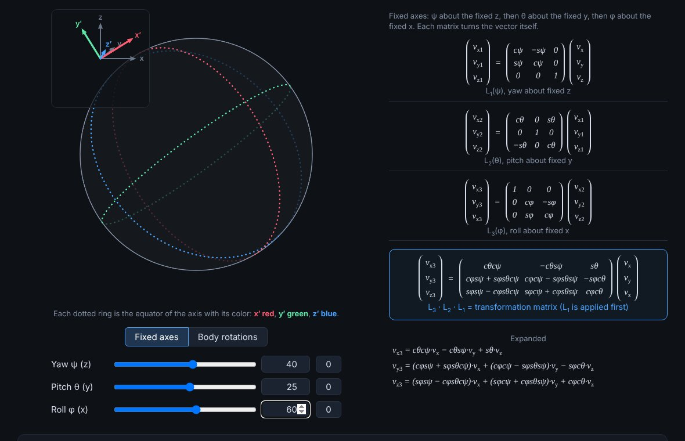

Learning rotation matrices by turning a ball
I'm learning rotation matrices, so I built a ball cut into 8 octants by three dotted rings, with yaw, pitch, and roll sliders. Next to it are the matrices from class, typed out and expanded, plus a corner widget with the fixed axes and the ball's own axes. The big lesson: the same angles in a different order land in a different orientation, and a sequence about moving axes equals the reverse sequence about fixed ones. I added a second mode where every drag turns the ball about its own x′, y′, or z′, and wrote up what I learned underneath.
Read more